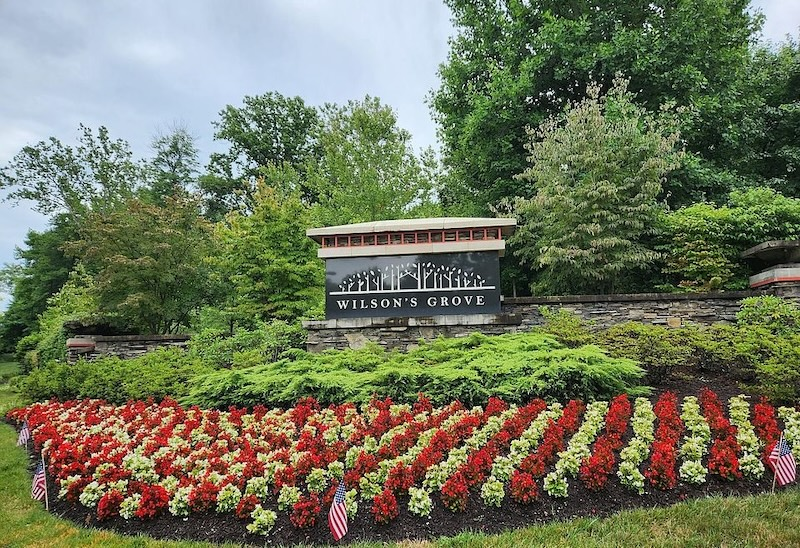

Wilson's Grove
Gambrills, Maryland
Welcome home! Wilson's Grove is an exceptional community with amenities such as an outdoor pool, walking paths, tennis and basketball courts, a clubhouse with a fitness center, a playground and tot lot and so much more.


What do you need to do?
- Pay AssessmentOpens the D.H. Bader portal
- Pool StatusRegister or check status on CellBadge
- ARC RequestsARC process, form and application status
- DocumentsBylaws, covenants, guidelines and rules
- Reserve ClubhouseFee, form and how to submit it
- Key FobsFor the pool, gym and clubhouse
- CalendarBoard, committee and community calendar
- Report an IssueReach D.H. Bader or the HOA Board
Community Details
Established in 2015
Wilson's Grove has 182 single family homes with more than 15 model types from two different builders, ensuring aesthetic diversity across the community. All homes were built between 2015 and 2019, with a Homeowners Association that has ensured the community maintains its beauty for the past decade.
Secluded, Yet Convenient
WG boasts convenient and easy access to Washington DC, Annapolis, Baltimore and Ft Meade alike. Its location is simply ideal, with easy access to I-97, 32, 301, Route 50, BWI, Waugh Chapel Towne Center and wonderful restaurants. Despite this, sitting on your back patio feels quiet and secluded.
Great School District
Wilson's Grove children attend Nantucket Elementary, Crofton Middle, and Crofton High School, each with a rating of 8+ from GreatSchools.org.
Tons of Amenities
Amenities include an outdoor pool, walking paths, tennis and basketball courts, a clubhouse with a fitness center, a playground and tot lot and more, all ensuring a vibrant and active lifestyle. The community hosts movie nights, children's activities and so much more!